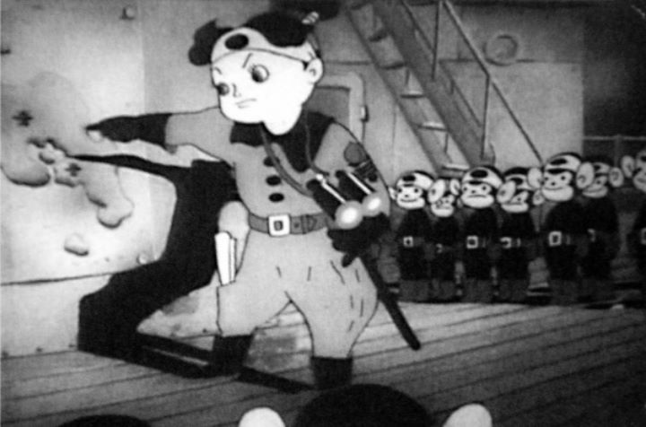

Disclaimer: This review covers the 1945 feature film "Momotaro - Sacred Sailors" and the 1943 short "The Spider and the Tulip," as packaged together in the North American Bluray release.Anime licenses outside of Japan are truly a mystery. Often, popular series that seem more important than others will never be released on home video in North America, with no public explaination. Sometimes, a forgotten series will get a release for the first time more than a decade after its Japanese broadcast. Sometimes a distributor will experiment with other types of media, such as short films, or animated films from other countries. The most confusing release might be Funimation's 2017 Bluray of "Momotaro - Sacred Sailors," a war-propoganda film from 1945. Packaged with a 1943 short ("The Spider and the Tulip") and physical paper essays by anime historians Helen McCarthy and Mika Tomita, the film is considered to be the first feature-length animated film from Japan, and therefore, the first "anime" film, one that "father of anime" Ozumu Tezuka cites as a major inspiration. Despite its historical significance and recent discovery of a surviving print, allowing for a remaster... one can't help but scratch their head to see it released on home video. By Funimation, no less, one of the most commerical American anime distributors, one that rarely releases anything pre-1995, aside from the "DragonBall" franchise. I suspect the deal was made in secret in order to obtain some other film or series from the Japanese licensors. We'll never know, and regardless, "Momotaro" is here for you to see.Beginning with multiple disclaimers from both Funimation and Shochiku that they do not support the racist and pro-military content you are about to watch, "Momotaro" is a fictional portrayal of Japan preparing for war. It starts with Japanese sailors (confusingly, the "Navy" is a term used for both water and air forces) returning home to visit their neighbors and families, before returning to the frontline for a final attack against the enemy. The characters are all cute animals, most looking and sounding like children, except for one human character that leads the air force (who also looks like a child). To the local children, the sailors proudly talk about the planes they get to fly, inspiring dreams of action. The film is a musical, with Japanese children's songs guiding the family-friendly story. In another scene, elephants and monkeys sing of their strength and teamwork, and the joy of work, as they build an army base to house their planes, and as they clean their guns and pack their parachutes. It's a bizarre juxtaposed series of images. Clearly, the film was meant for children to watch, with many moments of innocent delight, but it's unintentionally funny or disturbing to see today, with cute animals that prepare weapons so simply. Horrors of war are toned-down significantly, with only a brief moment of a sailor longing to see his family, the hardship of flying a plane in the rain, and a mention of the loss of one sailor during a recon mission (which is quickly ignored by the fleet's leader). Near the end of the film, a brief fairy tale is told to explain motivations against the enemy, represented by a "whited-skinned" pirate stealing from a kingdom, because "it is our custom." Finally, the Japanese Navy of animals proceeds with their final attack on a island base, easily overtaking the British / American forces, including a copyright-violating cameo of Popeye and Bluto shivering in their boots. The human leader of the Japanese forces, with samurai sword at his belt, insists on an unconditional surrender, and the whimpering British commander, speaking in English, gives in. The war is won, Japan is victorious. The written included essay darkly suggests that the English voices may have belonged to prisoners of war forced to act in the movie. Releasing in 1945, "Momotaro"'s portrayed victory proves incorrect, with the war declared over only months later, Japan having lost, and having experienced the horrific and sobering bombing of Hiroshima.  I haven't seen a movie so clearly offensive as "Momotaro" and it's portrayal of "white men." But it is not unusual for the period. All countries had their forms of propoganda, America included, often using race or past nationalities as excuses to culturally shun, and unjustly harm or imprision, despite their innocence. It occurred during World War I, World War II, the Cold War, and in varying degrees, still exists today. Even while everyone agrees it was wrong then and is very wrong now, I am certain some Japanese citizens still feel some pride to see the well-animated Japanese flag, and to hear songs of their nation's strength. I can't blame them. Aside from the offensive elements near the end, and the odd images of war equipment scattered in the middle, the movie holds up fairly well as a musical children's film. There isn't really a story, per say, and the pacing is incredibly slow, driven by the lyrical songs. But it's sweet, hopeful, and with an optimism that makes it seem well-suited for young children. Visually, the 4:3 aspect ratio and black-and-white picture clean up very nicely in the remaster. "Momotaro" doesn't look like anime, as most early-Japanese animation used Disney films as inspiration for character design and animation quality. Ironically, the animation is more fluid and expressive than most anime today, holding up well to modern audiences, despite the occasional missed or misplaced cel. Character designs are another story: animal designs are cute and distinct, but their round faces, especially their eyes and always-gaping-in-wonder smiles, are horrifyingly ugly, the sort of thing to give one nightmares. The music is sweet, timed carefully with the actions on screen, like most cartoons from the era.Briefly, I'll review the separate short "The Spider and the Tulip." Released in 1943, it pre-dates "Momotaro," but isn't the first Japanese animated short by a few decades; its inclusion was likely coincidence for having received a recent remaster around the same time (unfortunately, the original short that inspired "Momotaro" as a sequel film isn't included). It's about a spider that tries to trick a ladybug into its web, and the tulips that intervene to save the ladybug. Also a musical, it's generally a good short, not out of place with Disney's "Silly Symphony" films. It's paced slowly, but not as much as "Momotaro," making for a more enjoyable watch. The remaster doesn't quite look as sharp as "Momotaro," but otherwise, the short holds up well... if it wasn't for the spider's character design. With a black body, big white lips and white-palmed human hands, the character looks too much like an example of "black-face." Despite his nefarious intentions, the spider ends up going through quite the ordeal, enough to earn some sympathy from the viewer, but he ultimately gets discarded, presumed lost or dead, without much concern by the film's characters. If using the "black-face" design as context, the film could have a meaning along the lines of "black people aren't welcome alongside the innocents here." It's not as obvious an offense as "Momotaro," but enough so for the modern disclaimer at the beginning of the film to feel warranted."Momotaro - Sacred Sailors" is a fascinating film that historians will relish being able to see. Anime fans will also no doubt be curious to see the film that inspired Osamu Tezuka as a child. But as much as I appreciate the fluid animation, there are other, better, examples of it from Japan that released a couple decades later. And the wartime spirit with such child-friendly visuals is jarring such that, for non-academics, it's only a curious oddity that would elicit uncomfortable laughter or shock. I'm happy that Funimation was brave enough to release it on home video for me to see, but I may always be left wondering why they did.
- "Ani" More reviews can be found at : https://2danicritic.github.io/ Previous review: review_Modest_Heroes Next review: review_Monogatari_Series_-_Final_Season